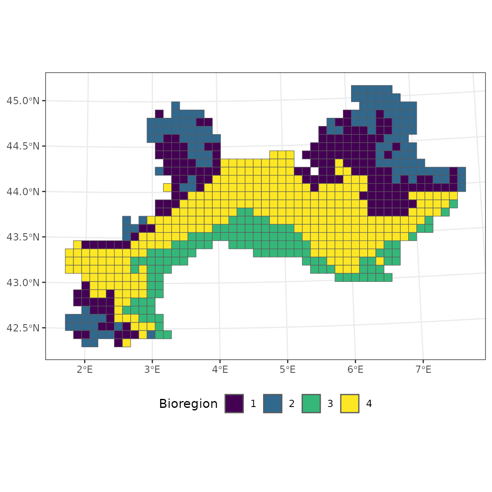

5.3 Summary metrics
Pierre Denelle, Boris Leroy and Maxime Lenormand
2025-01-31
Source:vignettes/a5_3_summary_metrics.Rmd
a5_3_summary_metrics.RmdIn this vignette, we aim at evaluating the contribution of individual
species to each bioregion, using the function
site_species_metrics().
Data
We use the vegetation dataset that comes with
bioregion.
data("vegedf")
data("vegemat")
# Calculation of (dis)similarity matrices
vegedissim <- dissimilarity(vegemat, metric = c("Simpson"))
vegesim <- dissimilarity_to_similarity(vegedissim)Bioregionalization
We use the same three bioregionalization algorithms as in the visualization
vignette, i.e. a non-hierarchical, hierarchical and network
bioregionalizations.
We chose 3 bioregions for the non-hierarchical and hierarchical
bioregionalizations.
# Non hierarchical bioregionalization
vege_nhclu_kmeans <- nhclu_kmeans(vegedissim, n_clust = 3, index = "Simpson")
vege_nhclu_kmeans$cluster_info # 3## partition_name n_clust
## K_3 K_3 3
# Hierarchical bioregionalization
set.seed(1)
vege_hclu_hierarclust <- hclu_hierarclust(dissimilarity = vegedissim,
index = names(vegedissim)[3],
method = "average", n_clust = 3,
optimal_tree_method = "best")
vege_hclu_hierarclust$cluster_info # 3## partition_name n_clust requested_n_clust output_cut_height
## 1 K_3 3 3 0.5625
# Network bioregionalization
set.seed(1)
vege_netclu_walktrap <- netclu_walktrap(vegesim,
index = names(vegesim)[3])
vege_netclu_walktrap$cluster_info # 3## partition_name n_clust
## K_3 K_3 3Bioregion metrics
Number of sites belonging to a bioregion, how many species do these sites contain. Number of endemic and proportion of endemism are also calculated. Endemic species are species only present in sites assigned to a particular bioregion.
bioregion_summary <- bioregion_metrics(bioregionalization = vege_nhclu_kmeans,
comat = vegemat)
bioregion_summary## Bioregion Site_number Species_number Endemics Percentage_Endemic
## 1 3 146 2666 121 4.538635
## 2 2 210 3102 57 1.837524
## 3 1 359 2824 407 14.412181Species metrics
Different summary statistics are available at the species level.
Contribution (\(\rho\))

The contribution index \(\rho\) is
calculated for each species x bioregion combination, following (Lenormand et al., 2019).
Its formula is
the following:
\[\rho_{ij} = \frac{n_{ij} - \frac{n_i n_j}{n}}{\sqrt{\frac{n - n_j}{n-1} (1-\frac{n_j}{n}) \frac{n_i n_j}{n}}}\] with \(n\) the number of sites, \(n_i\) the number of sites in which species \(i\) is present, \(n_j\) the number of sites belonging to the bioregion \(j\), \(n_ij\) the number of occurrences of species \(i\) in sites belonging to the bioregion \(j\).
Individual contributions
Affinity, fidelity and individual contributions describe how species are linked to their bioregions. These metrics are presented in (Bernardo-Madrid et al., 2019).
Affinity of species to their region: \[A_i = \frac{R_i}{Z}\] where \(R_i\) is the occurrence/range size of species \(i\) in its associated bioregion, and \(Z\) the total size (number of sites) of the bioregion.
A high affinity means that the species is occupying most sites of its associated bioregion.
Fidelity of species to their region: \[F_i = \frac{R_i}{D_i}\] where \(R_i\) is the occurrence/range size of species \(i\) in its associated bioregion, and \(D_i\) is its total occurrence/range size.
A high fidelity means that the species is not present in other bioregions than their associated one.
Indicator Value of species: \[IndVal = F_i
\times A_i\]
Bipartite metrics
When running a community detection algorithm on a site x species
matrix, both sites and species get a bioregion assigned. The degree of
affinity of both types of nodes can therefore be directly assessed, with
metrics like the coefficient of participation C or the
within-bioregion degree z.
Cz statistics
Cz metrics are derived from (Guimerà & Amaral, 2005). Their respective
formula are: \[C_i = 1 -
\sum_{s=1}^{N_M}{{(\frac{k_is}{k_i}})^2}\]
where \(k_{is}\) is the number of links of node (species or site) \(i\) to nodes in bioregion \(s\), and \(k_i\) is the total degree of node \(i\). The participation coefficient of a node is therefore close to 1 if its links are uniformly distributed among all the bioregions and 0 if all its links are within its own bioregion.
And: \[z_i = \frac{k_i - \overline{k_{si}}}{\sigma_{k_{si}}}\]
where \(k_i\) is the number of links of node (species or site) \(i\) to other nodes in its bioregion \(s_i\), \(\overline{k_{si}}\) is the average of \(k\) over all the nodes in \(s_i\), and \(\sigma_{k_{si}}\) is the standard deviation of \(k\) in \(s_i\). The within-bioregion degree z-score measures how well-connected node \(i\) is to other nodes in the bioregion.
Running the site_species_metrics function
We can now run the function site_species_metrics().
contrib_kmeans <- site_species_metrics(vege_nhclu_kmeans, vegemat,
indices = "rho")
contrib_hclu <- site_species_metrics(vege_hclu_hierarclust, vegemat,
indices = "rho")
contrib_netclu <- site_species_metrics(vege_netclu_walktrap, vegemat,
indices = "rho")
# Cz indices
clust_bip <- netclu_greedy(vegedf, bipartite = TRUE)
cz_netclu <- site_species_metrics(bioregionalization = clust_bip, comat = vegemat,
net = vegedf, indices = "Cz")site_species_metrics() outputs data.frame
with the contribution metrics available at the species level.
Spatial coherence
We use the metric of spatial coherence as in (Divíšek et al., 2016), except that we replace the number of pixels per bioregion with the area of each coherent part.
The spatial coherence is expressed in percentage, and has the following formula:
\[SC_j = 100 \times \frac{LargestPatch_j}{Area_j}\]
where \(j\) is a bioregion.
Here is an example with the vegetation dataset.
# Spatial coherence
vegedissim <- dissimilarity(vegemat)
hclu <- nhclu_kmeans(dissimilarity = vegedissim, n_clust = 4)
vegemap <- map_bioregions(hclu, vegesf, write_clusters = TRUE, plot = FALSE)
bioregion_metrics(bioregionalization = hclu, comat = vegemat, map = vegemap,
col_bioregion = 2) ## Bioregion Site_number Species_number Endemics Percentage_Endemic Coherence
## 1 2 128 2527 90 3.561535 49.21875
## 2 1 169 2983 45 1.508548 56.21302
## 3 4 298 2936 56 1.907357 98.99329
## 4 3 120 2262 67 2.961981 79.16667The bioregion 4 is almost constituted of one homogeneous block, which is why the spatial coherence is very close to 100 %.
ggplot(vegemap) +
geom_sf(aes(fill = as.factor(K_4))) +
scale_fill_viridis_d("Bioregion") +
theme_bw() +
theme(legend.position = "bottom")